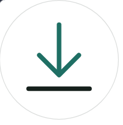
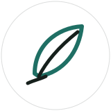

Portafolio — desarrollo de software
Soy Adriel Parache, desarrollador bajo la marca MountainDev. Diseño y construyo aplicaciones de escritorio, web y sistemas de gestión con foco en la experiencia del usuario final.
Trabajo tanto en proyectos propios como en equipo, cubriendo desde la interfaz hasta el empaquetado final de la aplicación. Me interesa que lo que construyo se pueda usar de verdad: instaladores que funcionan, flujos que no confunden al usuario, pantallas que comunican antes de explicar.
Actualmente desarrollo bajo la marca MountainDev, habiendo participado también en proyectos institucionales de mayor escala trabajando en equipo.
Sistema integral de gestión de pasantías y empleabilidad que conecta estudiantes, instituciones educativas y centros de trabajo en una sola plataforma, con paneles diferenciados por rol. Disponible en versión web y móvil.

Aplicación de escritorio para descarga de contenido multimedia, distribuida como instalador real de Electron y acompañada de una extensión de navegador, elaborada como proyecto sin fines económicos.

Infografía literaria interactiva sobre el poema de Germán Pardo García, elaborada como trabajo de análisis de la obra y su relación con la desigualdad educativa en la clase trabajadora. Construida con v0.